Study 38 · 13 October 2026
The subtitle, twelve voices
Decided: forty stones, the display treatment. Open: the subtitle's font. Twelve here, each a different kind; the headline and the links stay Space Grotesk. Also: the J now builds in under three seconds with the pointer still (was nearly nine, longer than its six-second hold, so it was in pieces more than whole).
Open the page (subtitle fonts at the top)Italic serifs
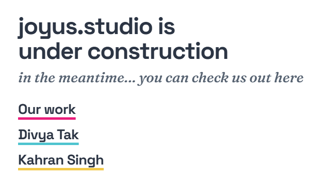
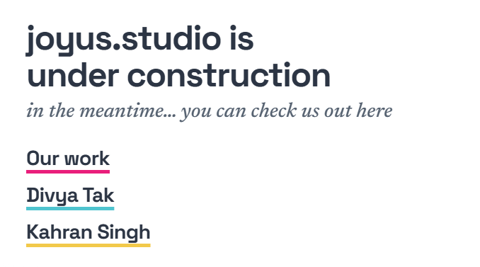
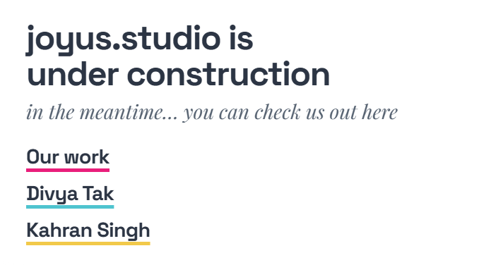
Typed
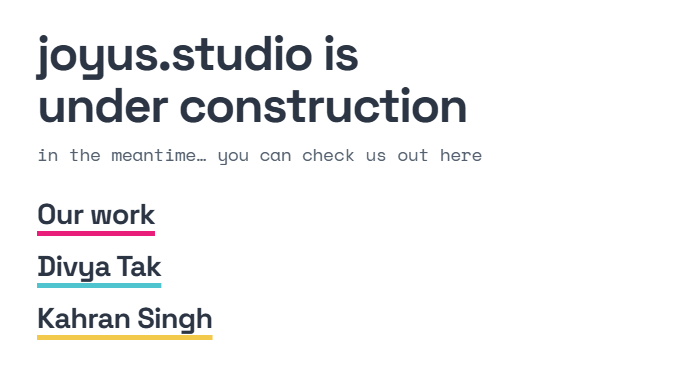
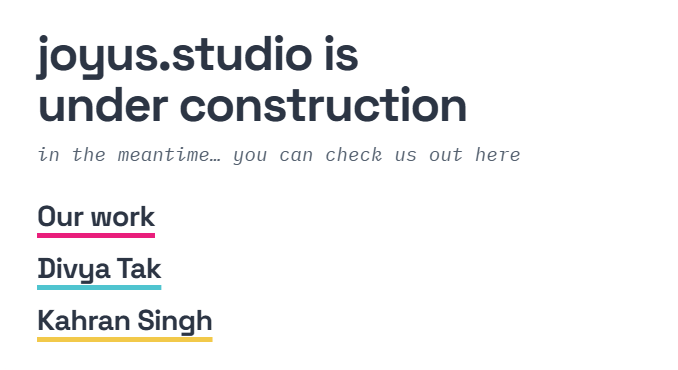
Hand, round, grotesk
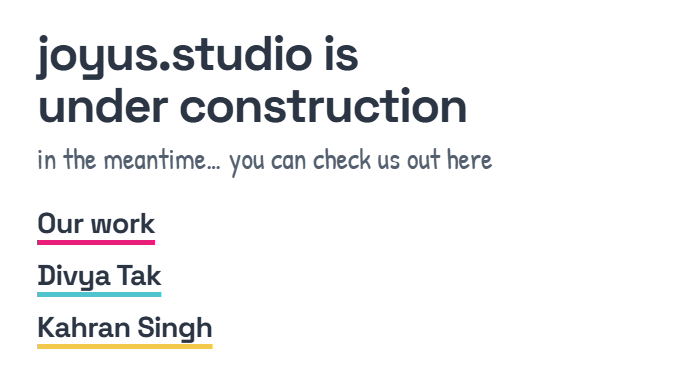
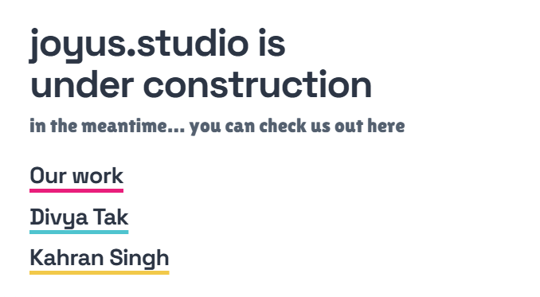
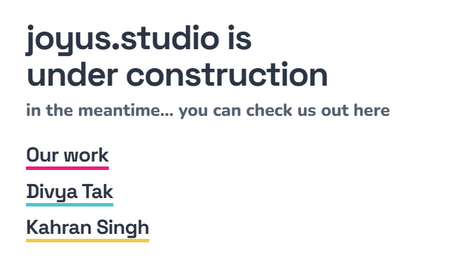
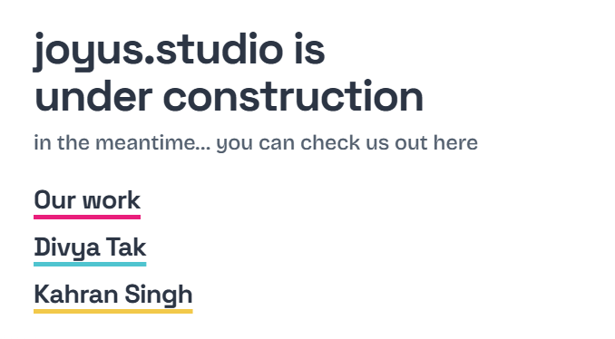
The page
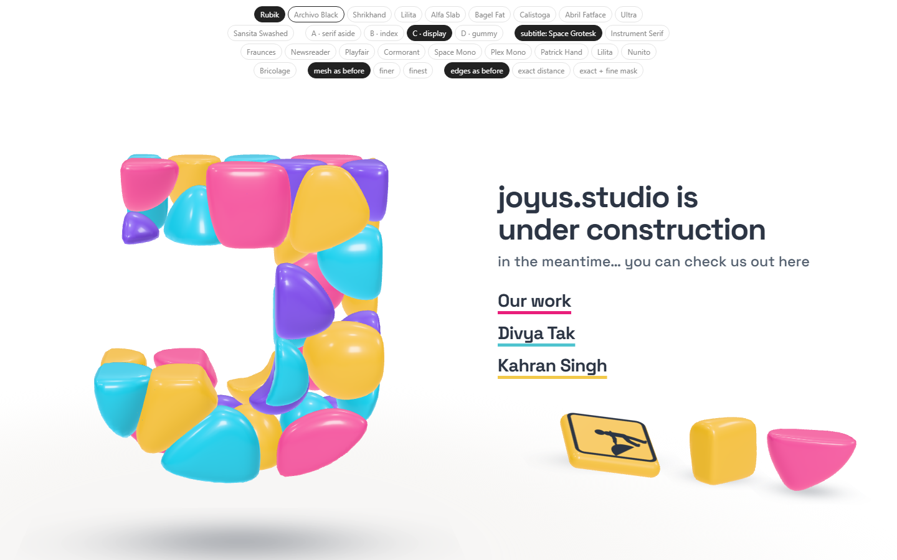
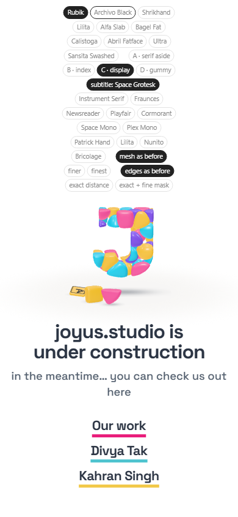
Open
- The subtitle's font.
Pictures: shoot.mjs (two minutes, before the test). Test: page-test.mjs, 55 checks in a browser; read by check.cjs.